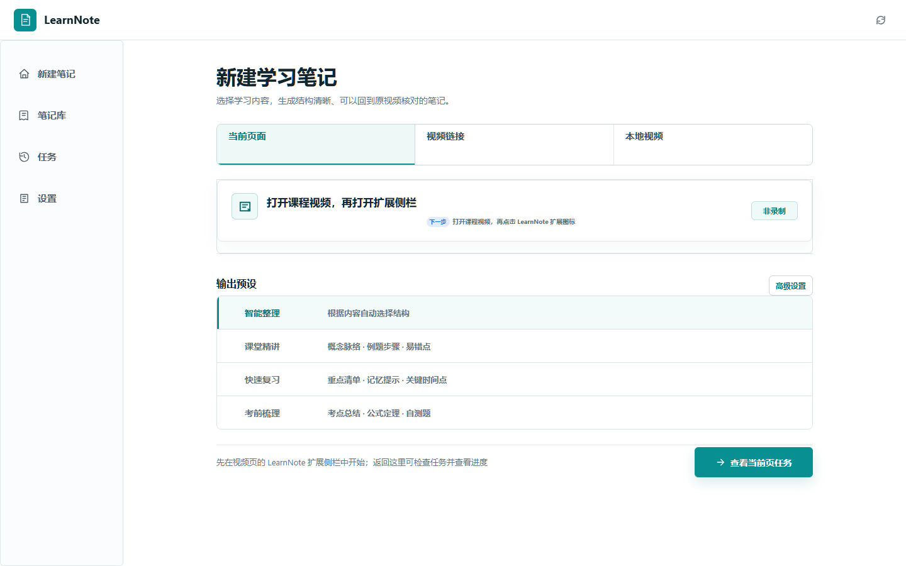
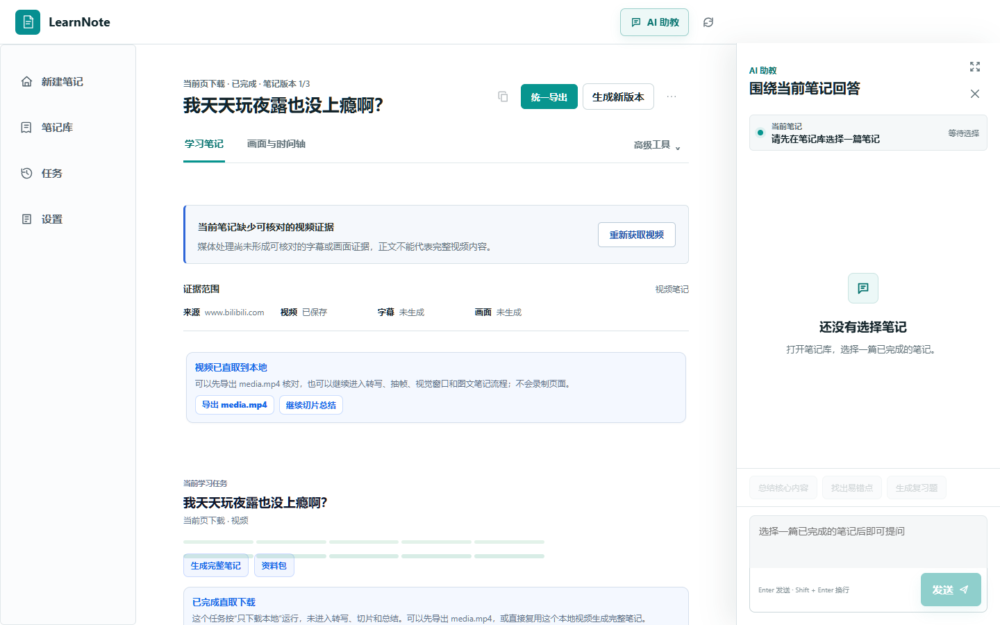

选择正在看的内容
网页视频从扩展侧栏发送；本地文件直接拖入；B 站和常见视频链接也可以粘贴处理。
从当前课程页、本地视频或视频链接开始。LearnNote 在你的电脑上完成下载、转写与切片，再把原话、画面和知识结构放进同一份笔记。

操作路径保持简单，复杂处理留在客户端后台完成。
网页视频从扩展侧栏发送；本地文件直接拖入；B 站和常见视频链接也可以粘贴处理。
下载、转写、关键帧和视觉窗口按时间轴组织。首页只显示当前任务进度，不让参数淹没操作。
结论能回到字幕和画面核对；同一视频可以按认真学习、快速回顾或备考重新整理。
左侧切换笔记，中间专注阅读，右侧随时向 AI 追问这节课。回答只使用当前任务的字幕、画面和笔记证据。

客户端是完整工作台；浏览器扩展只负责把当前播放页交给客户端。